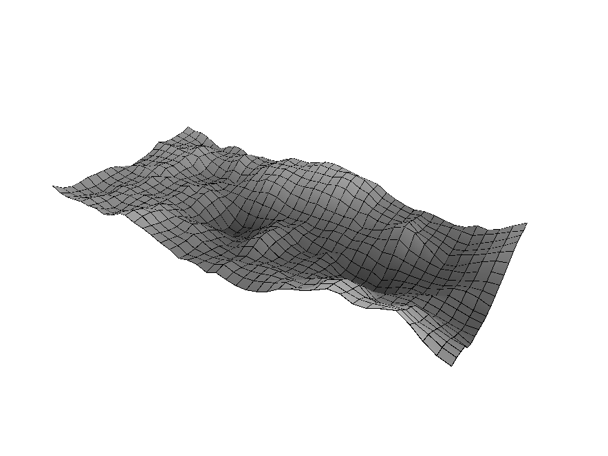

Nature of Code ch0 end

Finished capping off Chapter 0 of The Nature of Code. I've been through most of these examples in various languages, but I think ReScript has been my favorite so far.
I liked playing with both F# and ReScript, but a few key things pulled ReScript to the front for me:
- Type inference without the friction: I mostly didn't write types except for externals. Once the externals were taken care of, I barely wrote any types in the sketch code itself. Some externals slowed me down a bit, but once I understood more about ReScript's JS interop, I quickly solved those problems. I got to keep full, sound type safety for most regular coding without explicitly typing everything—it feels dynamic while staying completely type-safe!
- Blazing fast compiler: The compiler is fast fast.
- JavaScript similarity: Okay, this one surprised me. I was actually trying to get away from familiar JS syntax toward something new, but I found having a slightly similar syntax helped me feel more at home with ReScript while keeping a bit of familiarity along the way. Maybe a good gateway drug?
- Great tooling: The VS Code plugin works well for the most part, with only a few minor quirks.
A Minor Stumbling Block (P5.js & Global Scope)
Something less positive that surfaced was less of a ReScript issue and more of a JavaScript/p5.js quirk.
I kept running into issues where the floor function wasn't found in one module but worked in another. After swapping things around, I realized that the p5.js floor function (and all of its global functions) aren't available until the global instance has actually been created. I had global variables being initialized before main() was called outside of my setup/draw functions.
Once I rearranged things to initialize those variables inside setup(), everything started working again. This would probably be an issue in plain JS as well, but either way, it resulted in a runtime error—something I always like to avoid if possible.
Note: I converted the Terrain code Dan used in the book to ReScript with Gemini's help for this exercise.